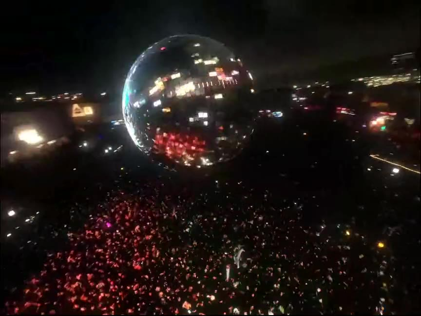
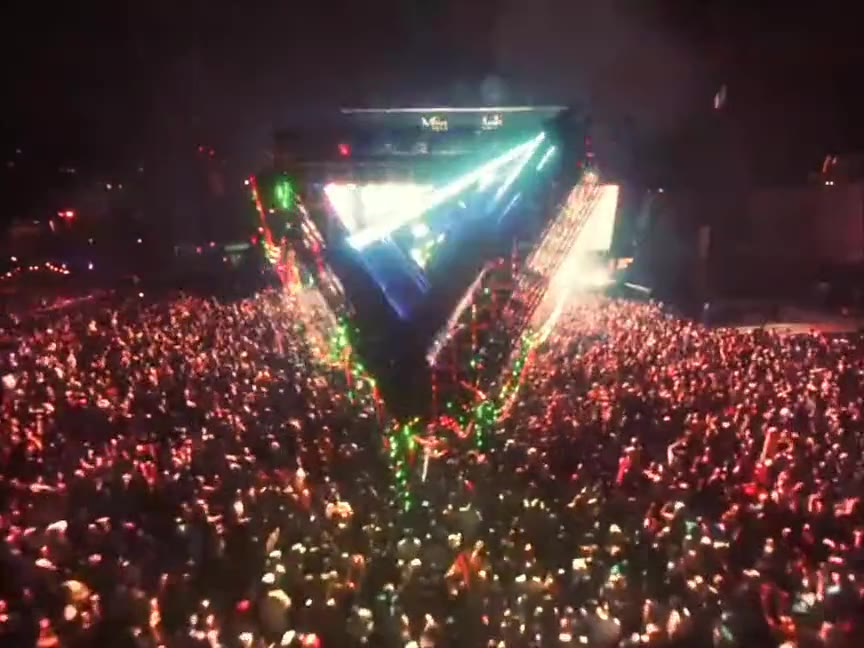
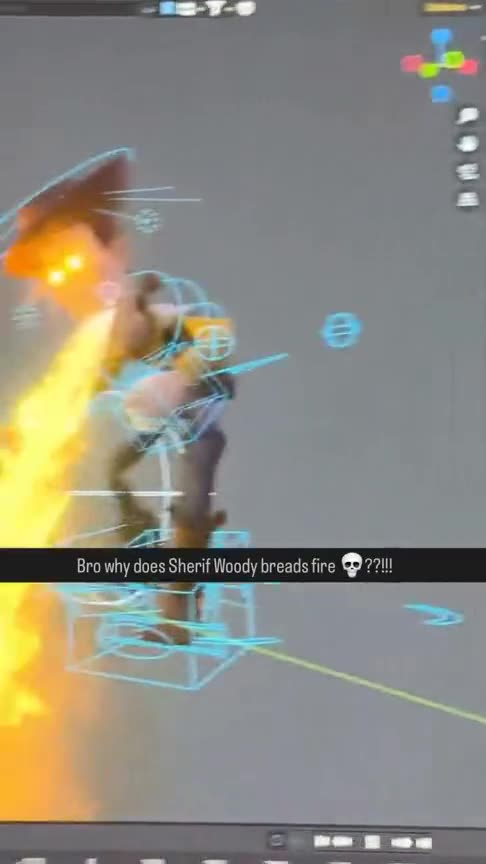
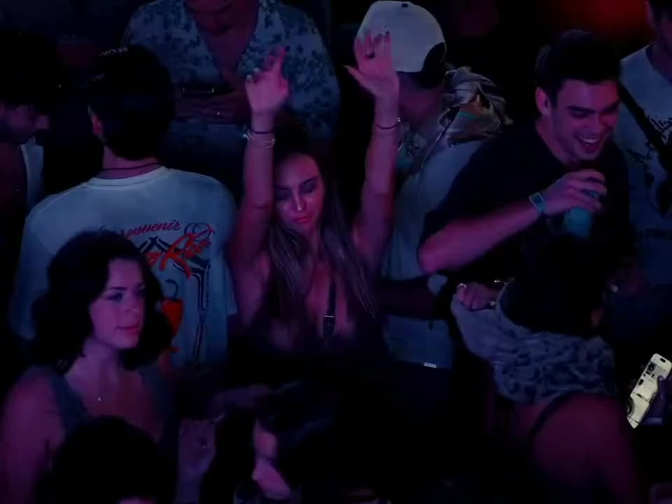
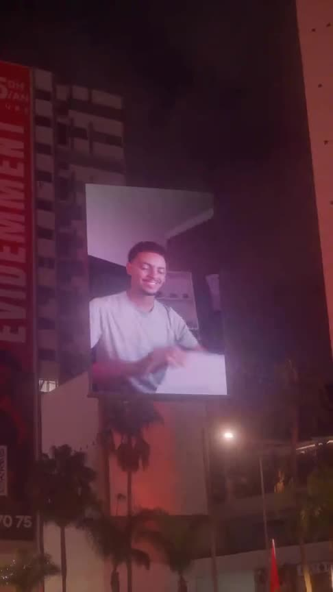
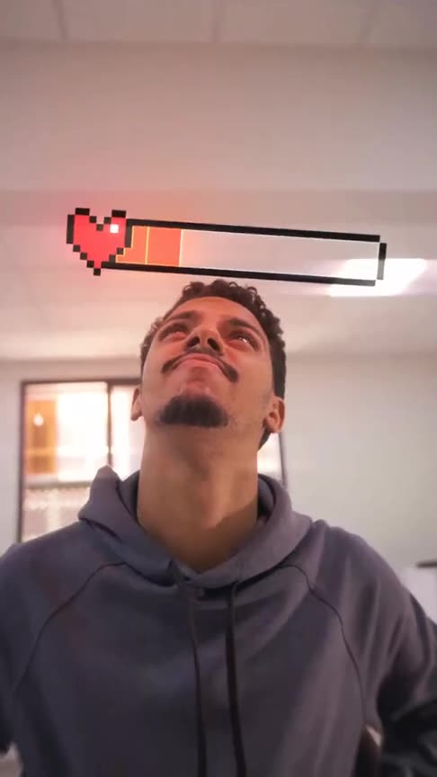

3D & VFX · Hocus Pocus
Hocus Pocus 2025
Animated content for an ultra-wide LED banner at Hocus Pocus 2025. Filmed in Morocco.
ClientHocus Pocus
Our role3D · Motion
LocationMorocco
Category3D & VFX
Want a film like this?
Atay Studio shoots, edits, grades and finishes in-house from Marrakech. Tell us the brief, the dates and the place.
Message us on WhatsAppEmail usMore work

III Points · Recap IIIII Points festival
III Points · RecapIII Points festival
Huna Paris · Le BlastHuna Paris Marrakech
III Points · Night 1III Points festival Where memories are madeBeni Mellal-Khénifra
Where memories are madeBeni Mellal-Khénifra
INWI · Sir B3idINWI Playing for ChangeFestival Zamane
Playing for ChangeFestival Zamane
Bifrutas · Back to SchoolBifrutas